Introduzione
Scopo documento
Questo documento ha lo scopo di illustrare il funzionamento dell'applicazione Premi coprendo tutti gli aspetti e funzionalità che offre. All'utente non è richiesta nessuna conoscenza informatica particolare per l'utilizzo dell'applicazione, poiché andrà ad interfacciarsi, tramite web browser, alle funzionalità offerte da Premi che verranno fornite con le stesse modalità di un sito web.
Scopo del progetto
Lo scopo del prodotto è di permettere la creazione e l’esecuzione di presentazioni a partire da mappe mentali. L’utente sarà guidato nella creazione di una mappa mentale e di uno o più percorsi di presentazione, utilizzando i nodi di tale mappa. L’utente potrà eseguire una presentazione seguendo un percorso creato oppure visitando qualsiasi nodo della mappa costruita; rompendo così la sequenzialità nella presentazione. Il prodotto sarà utilizzabile attraverso un browser.
Prerequisiti
L’utente deve possedere una connessione ad internet, un web browser (Chrome >=31, Firefox >=33) che supporti CSS3, HTML5 e JavaScript, una piattaforma che fornisca Premi come servizio raggiungibile tramite un URL e le relative credenziali di accesso (ottenibili mediante registrazione).
Come accedere al manuale
All'interno del header delle pagine di accesso, registrazione e dashboard è presente un riferimento, identificato da un'icona con un punto di domanda , che permette di accedere alla documentazione relativa all'applicazione Premi.Se l'utente si trova nelle pagine di modifica mappa mentale, modifica percorsi o presentazione, potrà trovare il riferimento al manuale utente all'interno del menù, al quale potrà accedere tramite il pulsante .Il manuale integrato nell'applicazione è contestuale, perciò se l'utente vi accede da una determinata vista otterrà le informazioni relative agli strumenti di quella vista. Per accedere al manuale utente in versione completa è necessario selezionare il link Manuale completo presente nella parte bassa di ogni finestra del manuale contestuale.
Accesso/uscita
Per poter usufruire delle funzionalità offerte dall'applicazione Premi è necessario avere un account nel sistema.Se l'utente dispone già di un account può accedere al sistema direttamente tramite autenticazione.
Registrazione
Il primo passo per un nuovo utente che decide di utilizzare l'applicazione Premi consiste nell'effettuare la registrazione.Per poter effettuare la registrazione l'utente deve eseguire le seguenti azioni:
- Premere il pulsante Registrati presente nella parte bassa della casella di autenticazione, in questo modo verrà visualizzata la pagina di registrazione;
- Inserire un indirizzo e-mail, che verrà utilizzato per identificare l'utente nel sistema;
- Inserire una password, per proteggere il proprio account;
- Reinserire la password utilizzata al punto precedente per confermarla;
- Premere il pulsante Crea account per confermare i dati inseriti ed accedere al sistema.
Se i dati inseriti non sono corretti o se i campi obbligatori non sono stati compilati verrà visualizzato un messaggio d'errore.
Autenticazione
L'autenticazione permette all'utente di accedere all'applicazione Premi e di usufruire delle sue funzionalità. Per poter eseguire la procedura di autenticazione l'utente deve aver già effettuato la registrazione al sistema. Per autenticarsi l'utente deve:
- Inserire l'indirizzo e-mail utilizzato in fase di registrazione;
- Inserire la password utilizzata in fase di registrazione;
- Premere il pulsante Accedi per confermare i dati ed accedere al sistema.
Se i dati inseriti non sono corretti o se i campi obbligatori non sono stati compilati verrà visualizzato un messaggio d'errore.
Uscita
L'utente può deautenticarsi dal sistema in ogni momento eseguendo la procedura di Logout.Per effettuare questa procedura l'utente deve trovarsi nella Dashboard e premere il pulsante Esci presente nella barra di intestazione dell'applicazione . Una volta effettuata la deautenticazione l'utente verrà reindirizzato alla pagina d'accesso dell'applicazione.
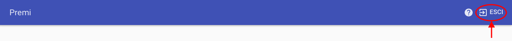L'utente può accedere alla Dashboard sia dalle pagine dedicate alla modifica del progetto, sia dalla pagina di presentazione tramite il pulsante Chiudi progetto presente all'interno del menu della pagina.
Dashboard
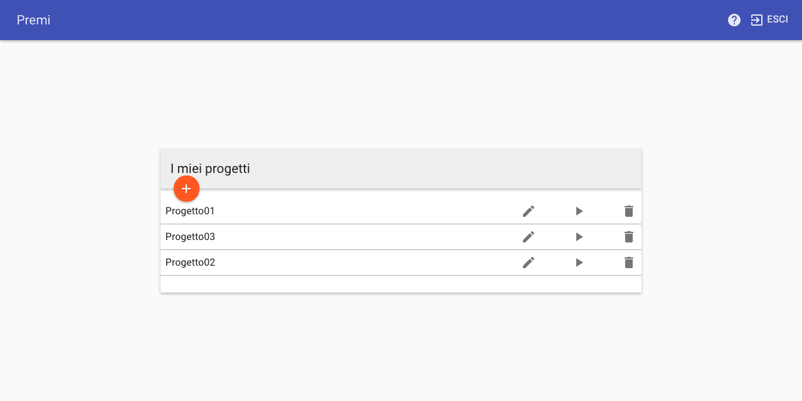In seguito all'autenticazione o alla registrazione l'utente verrà reindirizzato alla Dashboard. La Dashboard presenta una finestra che contiene al suo interno la lista dei progetti personali dell'utente. Per ogni progetto, all'interno della lista, sono presenti dei pulsanti che permettono di eseguite varie azioni sul rispettivo progetto. Mediante i pulsanti presenti nella lista dei progetti l'utente può crearne di nuovi, eliminare dei progetti già esistenti oppure può modificare o effettuare una presentazione di un determinato progetto.
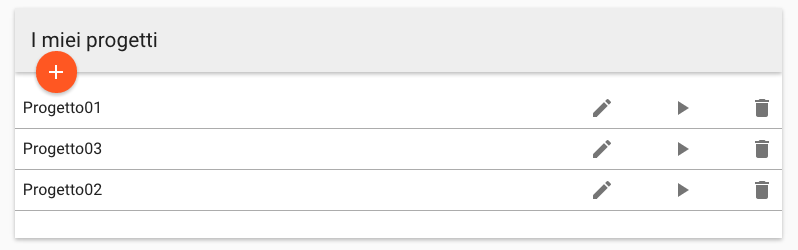Creazione nuovo progetto
L'utente può creare un nuovo progetto premendo il pulsante più che si trova nella parte alta della finestra contenente la lista progetti.Effettuando questa azione verrà aggiunto il nuovo progetto alla lista progetti.
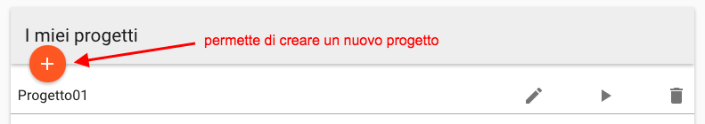Eliminazione di un progetto
Per poter eliminare un progetto l'utente dovrà premere il pulsante contenente l'icona rappresentante un cestino, che si trova nella riga relativa al progetto che desidera eliminare e confermare l'operazione.
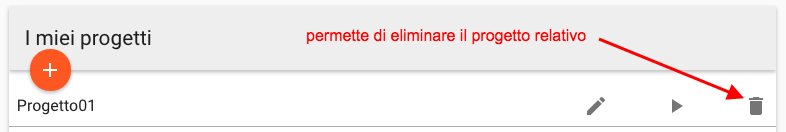Modificare un progetto
Per poter accedere alla modalità di editing del progetto l'utente dovrà premere il pulsante contenente l'icona rappresentante una matita, che si trova nella riga relativa al progetto che si desidera modificare.
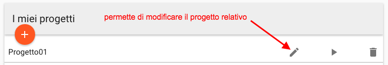Avviare la presentazione di un progetto
Per poter avviare la presentazione di un progetto, l'utente deve premere il pulsante contenente l'icona rappresentante il simbolo play, che si trova nella riga relativa al progetto che si desidera presentare.Successivamente, verrà visualizzata una nuova finestra nella quale l'utente dovrà selezionare il percorso di presentazione e, una volta selezionato, verrà avviata la presentazione.
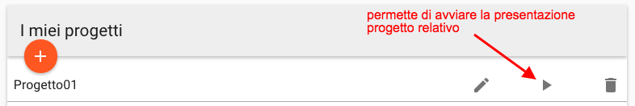Modifica progetto
La pagina per la modifica di un progetto permette all'utente di creare e modificare la mappa mentale che sta alla base della presentazione e di definire vari percorsi di presentazione ad essa associati che descrivono l'ordine in cui i contenuti dei nodi dovranno essere visualizzati durante la presentazione. Al caricamento della pagina l'utente troverà il grafo che rappresenta la mappa mentale. I nodi del grafo possono contenere vari elementi, sia testuali che grafici, che verranno utilizzati per la creazione dei frame di presentazione. Questi nodi sono collegati fra loro da relazioni gerarchiche (associazioni di tipo padre-figlio) e associazioni logiche, associazioni create dall'utente che mettono in evidenza il collegamento concettuale presente tra due nodi. L'utente troverà nella pagina tutti gli strumenti necessari per poter creare la propria mappa mentale, definire associazioni logiche fra nodi e definire percorsi di presentazione relativi alla mappa creata. La pagina è formato da due viste, che sono Modifica mappa e Modifica percorsi. Queste due viste permettono di usufruire rispettivamente degli strumenti per la modifica della mappa mentale e degli strumenti per modifica dei percorsi. L'utente può passare da una vista all'altra tramite i pulsanti Mappa e Percorsi presenti al centro della barra di intestazione dell'applicazione. La barra di intestazione contiene anche altri pulsanti che permettono di modificare la visualizzazione della mappa mentale e di modificare le impostazioni del progetto.
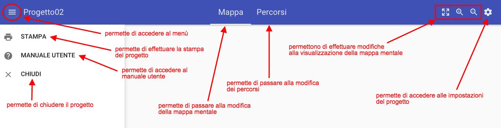Se il progetto aperto è appena stato creato, l’utente troverà un nodo già esistente. Questo è il nodo radice e rappresenta il nodo base della mappa mentale. L’utente potrà iniziare la creazione della mappa partendo da questo nodo.
Modifica della mappa mentale
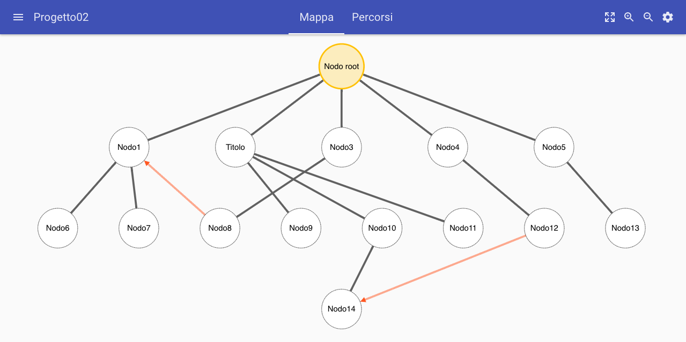Verranno descritti in seguito gli strumenti che l'utente potrà utilizzare per manipolare la mappa mentale che desidera creare.
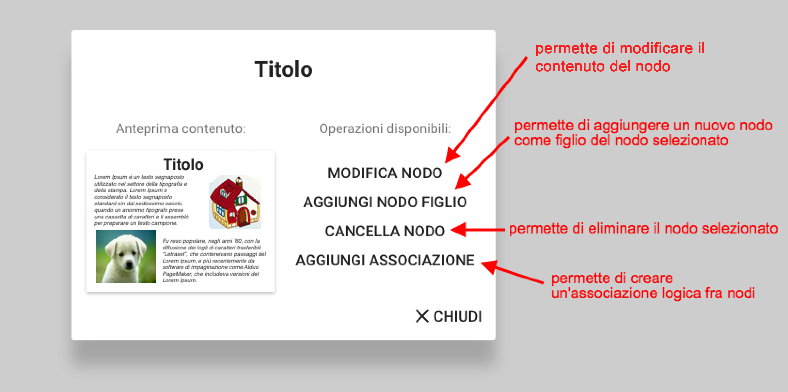Creazione nuovo nodo
Per creare un nuovo nodo, l'utente deve selezionare il nodo a cui desidera aggiungere il nuovo nodo figlio. Verrà visualizzata una nuova finestra contenente un'anteprima dei contenuti del nodo e un elenco delle azioni disponibili. L'utente dovrà selezionare dal menù la voce Aggiungi nodo figlio. Una volta premuto il pulsante, il sistema creerà in automatico un nuovo nodo vuoto come figlio del nodo selezionato.
Eliminazione di un nodo
Per poter eliminare un nuovo nodo, l'utente deve cliccare sul nodo che desidera eliminare. Verrà visualizzata una nuova finestra contenente un'anteprima dei contenuti del nodo e un elenco delle azioni disponibili. L'utente dovrà selezionare dal menù la voce Cancella nodo. Se il nodo che si vuole cancellare ha dei figli o delle associazioni con altri nodi, verranno anchesse cancellate.
Spostamento dei nodi
Per poter spostare un nodo, l'utente deve effettuare il drag and drop del nodo nella posizione desiderata. Questa modifica è temporanea dato che la disposizione dei nodi viene calcolata in modo automatico dall'applicazione.
Creazione di associazioni logiche
Per poter creare un'associazione logica tra due nodi, l'utente deve:
- Selezionare il nodo origine dell'associazione;
- Selezionare dal menù la voce Aggiungi associazione;
- Dalla finestra che comparirà, selezionare la voce seleziona nodo, per visualizzare la lista dei nodi associabili;
- Selezionare dalla lista il nodo con cui creare l'associazione;
- Premere il pulsante di conferma.
L'associazione logica verrà rappresentata tramite una freccia tratteggiata di colore arancio.
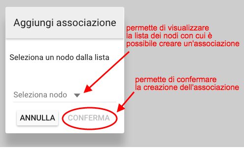Eliminazione associazioni logiche
Per poter eliminare un'associazione logica, l'utente deve:
- selezionare l'associazione logica che desidera eliminare;
- selezionare la voce cancella associazione dal menù che comparirà.
Inserimento contenuti
Per poter inserire dei contenuti all'interno di un nodo, l'utente deve selezionare il nodo nel quale desidera inserire dei contenuti. Verrà visualizzata una nuova finestra contenente un'anteprima dei contenuti del nodo e un elenco di azioni possibili. L'utente dovrà selezionare dal menù la voce Modifica nodo. Verrà visualizzata una nuova finestra nella quale sarà possibile gestire i contenuti del nodo, le varie funzionalità offerte verranno descritte nella sezione Modifica del contenuto di un nodo.
Modifica del contenuto di un nodo
In questa sezione verrà spiegato come utilizzare le funzionalità offerte dall'applicazione per gestire i contenuti di un nodo della mappa mentale. La finestra mostra nella parte sinistra due pulsanti, che sono rispettivamente Aggiungi testo e Aggiungi immagine e, nella parte destra una rappresentazione del frame con i suoi contenuti. L'utente può selezionare i contenuti cliccandoci sopra e vedrà apparire, sotto i pulsanti per l'inserimento di nuovi contenuti, una vista che permette di effettuare le modifiche sull'elemento selezionato.
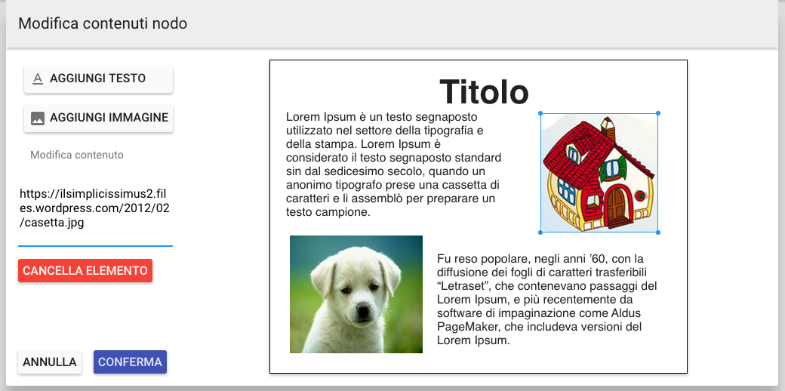Aggiungere del testo
Per poter inserire del testo all'interno del nodo, l'utente deve premere il pulsante Aggiungi testo, in questo modo verrà inserito all'interno del frame un nuovo elemento testuale contenente del testo di default. Per modificare il testo l'utente dovrà selezionare il nuovo elemento, in modo da rendere visibile lo strumento di modifica nella parte sinistra della finestra.
Aggiungere un immagine
Per poter inserire un'immagine all'interno del nodo, l'utente deve premere il pulsante Aggiungi immagine, in questo modo verrà inserita all'interno del frame un'immagine di default. Per modificare l'immagine, l'utente dovrà selezionare il nuovo elemento e modificare l'URL in esso contenuto tramite lo strumento di modifica che diventerà visibile nella parte sinistra della finestra, inserendo l'URL della nuova immagine. L'URL dell'immagine deve riferirsi ad un'immagine presente sul web.
Posizionamento contenuti
Per poter posizionare un contenuto all'interno del frame, l'utente dovrà trascinarlo, tramite Drag and Drop, nella posizione desiderata.
Ridimensionamento contenuto
Per poter ridimensionare un contenuto, l'utente dovrà selezionare il contenuto che desidera ridimensionare e posizionandosi sui bordi del contenuto selezionato ridimensionarlo.
Modifica dei percorsi di presentazione
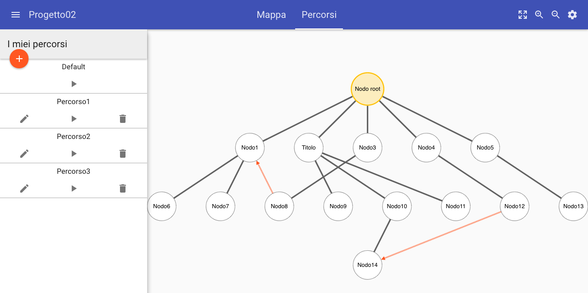Verranno descritte in seguito gli strumenti che l'utente potrà utilizzare per la creazione e la gestione dei percorsi personalizzati di presentazione.
Creazione nuovo percorso
Per poter creare un nuovo percorso di presentazione, l'utente deve trovarsi nella vista percorsi e deve premere il pulsante più presente nella parte sinistra della vista.Verrà visualizzata una finestra, nella quale l'utente dovrà inserire il nome del nuovo percorso e premere il pulsante Aggiungi.
Modifica di un percorso
Per poter modificare il nome di un percorso ed il suo contenuto, l'utente deve premere il pulsante con l'icona rappresentante una matita presente nella lista percorsi e relativa al percorso che si desidera modificare.
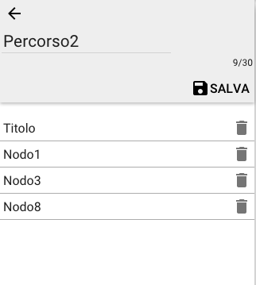Eliminazione percorso
Per poter eliminare un percorso, l'utente deve premere il pulsante con l'icona rappresentante un cestino presente nella lista percorsi e relativa al percorso che si desidera eliminare. Per il percorso di default non è disponibile questa opzione.
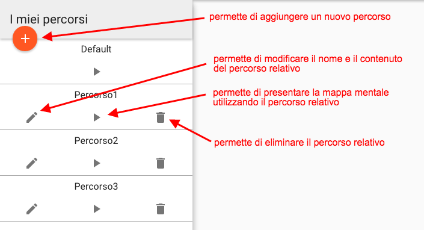Aggiunta di un nodo ad un percorso di presentazione
Per poter aggiungere un nodo ad un percorso di presentazione l'utente deve:
- Trovarsi nella vista Percorsi;
- Selezionare il nodo dalla mappa mentale;
- Selezionare dalla finestra che comparirà, il percorso al quale aggiungere il nodo selezionato.
Modifica delle impostazioni del progetto
Tramite questo strumento l'utente può effettuare delle modifiche al progetto sul quale sta lavorando. In particolare potrà modificare:
- Il nome del progetto;
- Il colore di sfondo dei frame del progetto;
- Il colore del testo dei frame del progetto;
- Il font utilizzato nei frame del progetto.
La finestra Impostazioni del progetto può essere raggiunta premendo l'icona rappresentante un ingranaggio , presente all'interno della barra di intestazione dell'applicazione.
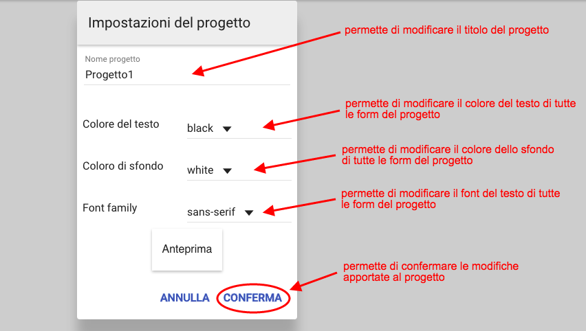Presentazione
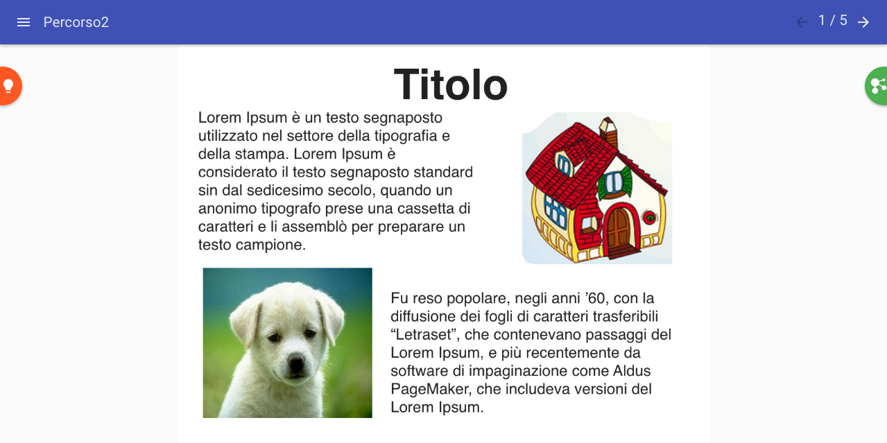Questa pagina è dedicata all'esecuzione di presentazioni, cioè la visualizzazione ordinata di una sequenza di frame. L'utente può accedere a questa pagina dopo aver selezionato un progetto, scelto un percorso di presentazione personalizzato e aver selezionato l'avvio della presentazione. La presentazione viene generata utilizzando i frame presenti all'interno dei nodi della mappa mentale, i quali verranno visualizzati secondo l'ordine stabilito dal percorso di presentazione.
Pannello di navigazione
Gli strumenti principali che permette all'utente di spostarsi all'interno della presentazione sono freccia a destra e freccia a sinistra che si trova in alto a destra nella vista di presentazione e i due menù laterali.
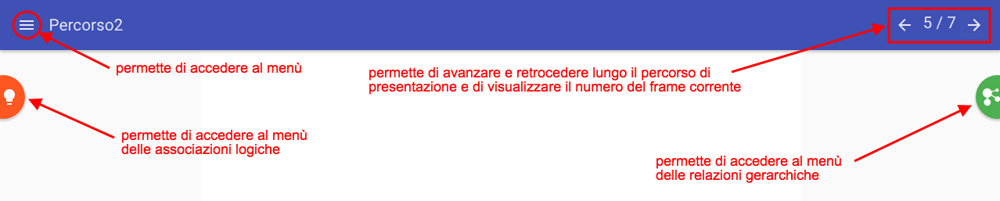Menu laterali
I due menu permettono all'utente di effettuare dei salti dal frame corrente ad un frame ad esso correlato tramite relazione gerarchica o associazione logica. Quando l'utente sta visualizzando un frame può passare alla visualizzazione di un altro frame, anche non appartenente al percorso di presentazione, purché il nodo che lo contiene abbia un qualche tipo di relazione con quello corrente. Una volta effettuato questo salto la presentazione passa in modalità "non lineare", impedendo all'utente di cambiare frame utilizzando le frecce. Per riprendere la presentazione lineare e ritornare all'ultimo frame del percorso visualizzato è necessario premere l'apposito pulsante presente nel Pannello di navigazione.
Menu delle associazioni logiche
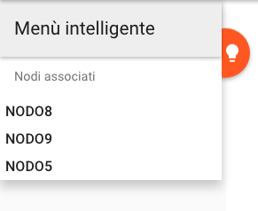Questo menu contiene una lista dei nodi della mappa mentale, collegati al nodo contenente il frame corrente, tramite un'associazione logica. L'utente può accedere a questo menù premendo l'etichetta a sinistra rappresentante una lampadina . Selezionando uno dei nodi presenti all'interno di questo menu si andrà a visualizzare il frame che contenuto in quel nodo, anche se il nodo non fa parte del percorso di presentazione.
Menu delle relazioni gerarchiche
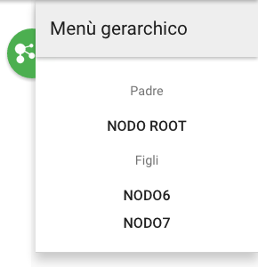Questo menu contiene una lista dei nodi della mappa mentale, collegati al nodo contenente il frame corrente tramite una relazione gerarchica. L'utente può accedere a questo menù premendo l'etichetta a destra rappresentante un grafo . Selezionando uno dei nodi presenti all'interno di questo menu si andrà a visualizzare il frame che rappresenta quel nodo, anche se il nodo non fa parte del percorso di presentazione.
Stampa di un progetto
L'applicazione Premi offre la possibilità di effettuare la stampa in formato PDF, su stampante e su iCloud (funzionalità disponibile solo per i dispositivi Apple), sia della mappa mentale che della presentazione. In seguito verranno descritti i procedimenti che consentono di eseguire le varie stampe.
Stampa mappa mentale
Per poter effettuare la stampa della mappa mentale, l'utente deve trovarsi nella pagina di modifica della mappa mentale o in quella per la modifica dei percorsi di presentazione. Dovrà poi aprire il menù tramite il pulsante e selezionare la voce Stampa. In seguito verrà visualizzata la finestra di stampa del browser dalla quale sarà possibile selezionare le impostazioni di stampa, specificando se stampare come PDF oppure stampare con una stampante. Dal momento che viene stampata solamente la parte della mappa mentale visualizzata a schermo, è consigliato regolare in modo opportuno lo zoom della mappa, in modo da stamparla nella sua interezza.
Stampa di una presentazione
Per poter effettuare la stampa della presentazione, l'utente deve trovarsi nella pagina di presentazione. Dovrà poi aprire il menù tramite il pulsante e selezionare la voce Stampa. In seguito verrà visualizzata la finestra di stampa del browser dalla quale sarà possibile selezionare le impostazioni di stampa, specificando se stampare come PDF oppure stampare con una stampante.
Messaggi d'errore
Durante l'utilizzo dell'applicazione Premi c'è la possibilità che si verifichino degli errori. Questi vengono gestiti dall'applicazione fornendo all'utente un messaggio che lo informi sulla causa del malfunzionamento e se possibile delle indicazioni su come comportarsi. In seguito verranno elencati gli errori che possono essere sollevati dall'applicazione.
Lista degli errori
La lista che segue contiene il tipo di errore e la sua descrizione per gli errori specifici dell'applicazione Premi.
- Utente non trovato: l'identificativo utente fornito non è un identificativo valido;
- Credenziali non valide: è necessario fornire un indirizzo email ed una password valide;
- Progetto non trovato: l'identificativo del progetto fornito non è un identificativo valido;
- Nodo non trovato: l'identificativo del nodo fornito non è un identificativo valido;
- Associazione non trovata: l'identificativo dell'associazione fornita non è un identificativo valido;
- Percorso non trovato: l'identificativo del percorso fornito non è un identificativo valido;
- Progetto corrotto: errore nella ricerca dei campi dati relativi al progetto indicato;
- Dati non validi: i dati relativi al progetto sono vuoti o errati;
- Progetto corrotto: errore durante l'eliminazione del progetto;
- Dati non validi: i dati relativi al contenuto del nodo non sono validi o sono formattati in modo errato;
- Nodi non validi: gli identificativi dei nodi forniti non sono validi oppure non esistono oppure il nodo entrante coincide con il nodo uscente;
- Dati non validi: i dati per la modifica del percorso non sono definiti;
- Nodo del progetto non trovato: il nodo riferito nella relazione o nel percorso non è stato trovato all'interno del progetto indicato;
- Nodo padre non esistente: il nodo padre indicato non esiste o non corrisponde ad un nodo valido;
- Nodo non valido: impossibile eliminare il nodo radice della mappa mentale;
- Nodo del percorso non trovato: il nodo riferito non è stato trovato all'interno del percorso indicato.
Gli errori vengono segnalati all'utente tramite la visualizzazione di un popup, in cui è presente la descrizione dell'errore.
 Nel caso in cui l'utente desideri segnalare la presenza di errori non segnalati o ricevere informazioni specifiche riguardo agli errori dell'applicazione, può contattare il team seguendo le indicazioni presenti nella sezione Segnalazione degli errori.
Nel caso in cui l'utente desideri segnalare la presenza di errori non segnalati o ricevere informazioni specifiche riguardo agli errori dell'applicazione, può contattare il team seguendo le indicazioni presenti nella sezione Segnalazione degli errori.
Segnalazione degli errori
Come segnalare dei bug o richiedere nuove funzionalità
Se l'utente riscontrasse, durante l'utilizzo dell'applicazione Premi, eventuali bugs o errori di altro genere o desiderasse richiedere l'aggiunta di nuove funzionalità che ritiene utili, può mandare una e-mail al team Pragma inserendo come oggetto il tipo di richiesta (es.:Segnalazione bug, Nuova funzionalità), e nel corpo una descrizione di essa.L'indirizzo a cui sarà possibile inviare le segnalazioni è: pragma.swe@gmail.com